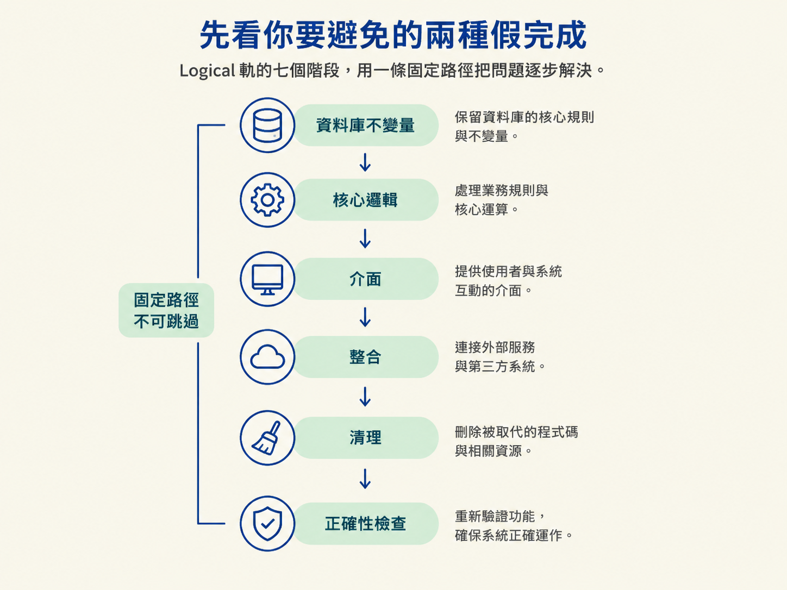
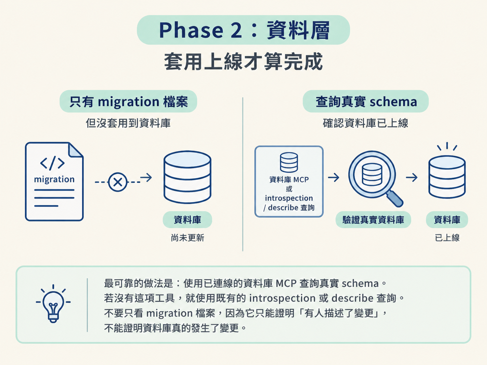
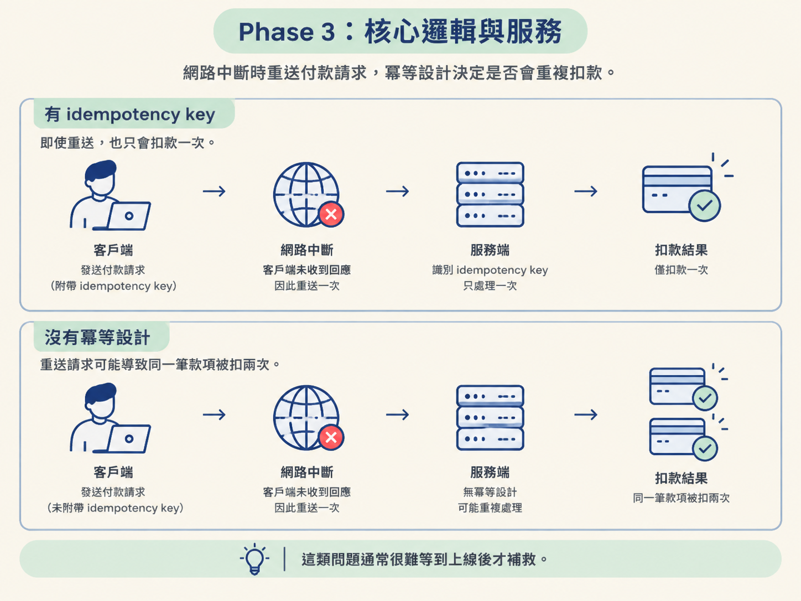
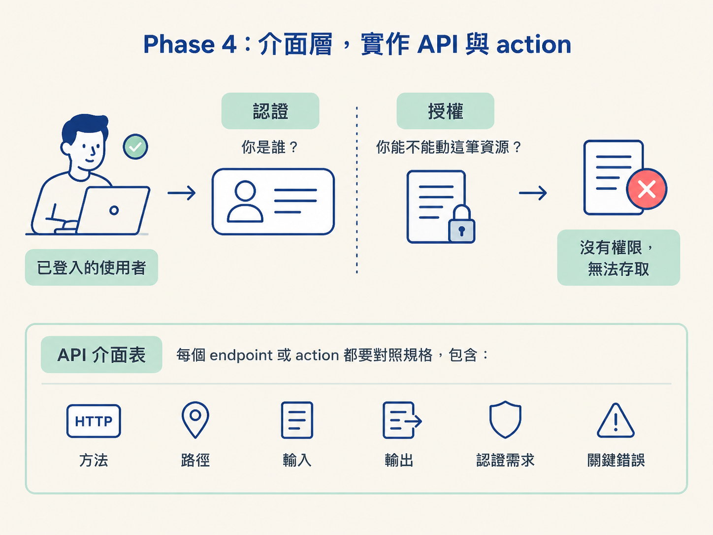
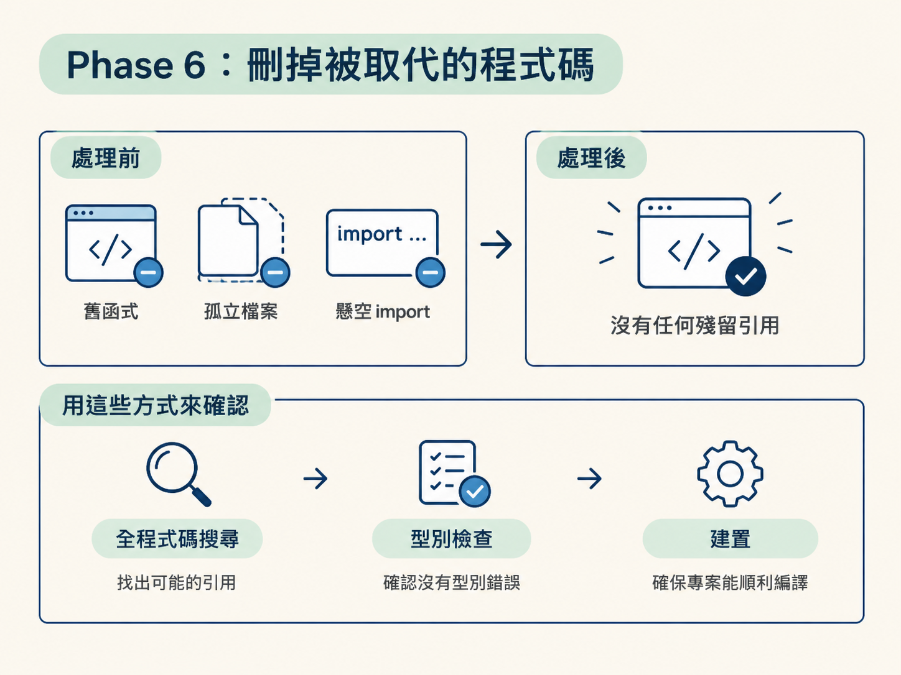

後端任務最危險的地方，往往不是程式直接報錯，而是看起來已經完成。migration 檔案產生了、型別檢查也通過了，工程師就把任務打勾；但 migration 其實從沒套用到真正的資料庫。
另一個常見陷阱，是把「使用者已登入」當成「使用者可以操作這筆資料」。驗證只回答「你是誰」，授權才回答「你能不能動這個資源」。這兩個漏洞在本機開發時可能安靜得像沒事，到了真實環境卻會變成資料錯誤或安全事故。
Logical 軌的七個階段，就是用一條固定路徑把這些洞堵起來：從資料庫不變量開始，經過核心邏輯與介面，接上外部服務，最後刪除被取代的程式碼並重新檢查正確性。

完成這個階段後，你應能依照 logical-guide 的七個階段實作後端：
Logical 軌的定位很清楚：你是專案的資深後端工程師，負責實作 /architect 已經做好的決策，而不是重新辯論一次架構。
你的工作依據有三個來源：規格、程式區旁邊的 AGENTS.md，以及既有程式碼。規格決定要做什麼，AGENTS.md 說明專案慣例，既有程式碼則提供實際的風格與模式。先對齊這三者，就不必在每個檔案旁邊重新發明一套做法。
| 規則 | 實際做法 |
|---|---|
| 照規格蓋 | 資料模型、API 介面、關鍵不變量、安全模型與設定，都以規格的 Feature design 為準。規格定義狀態機為「試用 → 生效 → 逾期」，就實作這一台，不要自行創造另一套狀態。 |
| 對齊 codebase | 動手前先讀最近的 AGENTS.md 與二到三個鄰近檔案。沿用專案既有的 ORM、錯誤處理、驗證函式庫與檔案配置。既有模式就是已經做過的決策，不要另立一套。 |
| 推斷、詢問、建議 | 規格、AGENTS.md 與程式碼已經能回答的問題，直接推斷，不要再問。只有模糊到會阻擋正確實作的商業規則才需要詢問。至於 helper 長什麼樣、檔案放在哪裡等實作細節，自己決定並往前做。 |
第一階段不是寫程式，而是確認你要蓋什麼、哪些東西不能自行改動。
先完整讀過治理規格，特別是 Feature design 與 Consequences。前者通常包含資料模型、API 介面、不變量、安全模型與設定；後者則說明這些決策帶來的影響。
接著讀 spec 的 ## Requirements。其中的 AC-1… 是這次建置的合約，而 build plan 的每個任務都會標明它服務哪個 AC。最後，以 step 2.5 的探索地圖作為範圍，不要為了重新確認已知資訊而重讀整個區域。
如果這次任務會取代既有程式碼，例如重構或遷移，而不是單純新增功能，就在這一步先記下：
這份清單會在 Phase 6 使用。沒有先列出來，很容易只把新碼加上去，卻忘了刪除舊碼。
同時列出整合點與建置順序。這條軌通常依序走過：資料、邏輯、介面、整合、清理。
如果在這個 grounding 過程中發現規格本身站不住腳，例如資料模型撐不住需求，或驗收條件與 API 介面互相矛盾，就先停下來交回 /architect。不要先寫出一套偏離規格的程式，再期待後面補救。
依照規格的資料模型草圖實作 schema 與 migration，確認欄位型別、是否可為 null、外鍵關聯與唯一約束都符合設計。
產生 migration 不等於完成。資料層變更必須真的套用到目標資料庫，並確認 schema 已經上線，才算完成。
最可靠的做法，是使用已連線的資料庫 MCP 查詢真實 schema。若專案沒有這項工具，就使用既有的 introspection 或 describe 查詢。不要只盯著 migration 檔案看，因為檔案存在只能證明「有人描述了變更」，不能證明資料庫真的發生了變更。

資料層還有兩條實務規則：
不要直接在已有資料的活系統上加入一個沒有預設值的 NOT NULL 欄位。這種 migration 可能在開發環境看似沒問題，到了實際資料庫就會因為既有資料無法填入而失敗。
最後，沿用專案既有的 ORM 與命名慣例，不要另外拉出一套資料存取方式。
這一階段把規格中的商業邏輯與狀態轉移真正實作出來。
狀態機要明確建模。合法的轉移要能發生，不合法的轉移則必須被拒絕，而不是讓任何狀態都能任意跳轉。
冪等性是這裡最容易被忽略、後果卻很嚴重的要求。凡是涉及金流、訊息或其他外部副作用的變更，都要產生並遵守 idempotency key，讓同一個請求被重試時不會重複造成結果。
想像客戶的網路短暫中斷：付款請求其實已經送達，但客戶端沒有收到回應，因此又送了一次。如果沒有冪等設計，系統可能會扣兩次款。這類問題通常很難等到上線後才補救。

輸入資料要在邊界驗證，並且往安全的方向失敗（fail closed）：遇到不確定的情況就拒絕，而不是放行。
錯誤處理則沿用 codebase 已有的模式。專案使用 result，就跟著 result；使用 exception，就跟著 exception；使用既定的 error 形狀，也不要自行創造另一種回傳格式。
每個 endpoint 或 action 都必須完整對照規格的 API 介面表，包含方法、路徑、輸入、輸出、認證需求與關鍵錯誤。

認證只能確認呼叫者的身分有效。授權則要依安全模型確認呼叫者是否擁有這筆資源、是否具備正確角色，或是否位於允許的組織範圍內。使用者已登入，不代表他可以操作這一筆資料。
即使是 MVP，也不要讓列表一次回傳全部資料。不分頁的列表很容易在資料量成長後變成效能事故。
客戶端必須能依賴一致的錯誤格式，並且搭配正確的 HTTP 狀態碼。
對外公開的介面必須具備限流，避免被過量請求拖垮。
外部供應商依照規格中已由 /architect 決定的建議接上去。這裡不是重新挑供應商的時機，而是依決策完成整合。
密鑰與金鑰一律從環境變數或密鑰管理服務讀取。絕不硬編碼，也絕不提交進版控。每個新增的環境變數都要命名，並在報告中提醒工程師完成設定。
入站 webhook 至少要處理三件事：
在整合邊界加上結構化日誌，讓事件能被查詢與分析。凡是涉及金流、存取控制或合規範圍的變更，還要加上稽核日誌。
如果這次建置取代了既有模式或實作，例如重構，或把舊做法換成新做法的 rollout，就必須執行這個階段。
核心規則很簡單：新舊實作不能共存。
把死碼留在專案裡，是重構最常見的漏失。移除它不是之後再整理的雜事，而是這次建置的一部分。
要清理的內容包括：
刪除後，必須證明沒有任何東西仍在引用它。對每個被移除的符號搜尋整個 codebase，除了搜尋名稱，也要搜尋它的 import 路徑，確認沒有殘留的呼叫者、轉發用的 export，或指向它的 index barrel。
如果還有東西需要舊符號，代表遷移尚未完成。正確做法是把那個呼叫者也遷移掉，而不是把舊碼留下來繼續存活。
接著在舊碼確實不存在的狀態下執行型別檢查、建置、lint，以及專案提供的死碼或未使用 import 檢查。這些檢查要在刪除之後通過。
未使用 import 或無法解析的引用錯誤，通常是在告訴你還漏了一個地方。不要為了消除錯誤而把舊碼加回去。

唯一的例外，是規格明確要求一段過渡期，讓新舊實作暫時同時運作，例如 feature flag 遷移或回填視窗。這時要照規格執行，並留下清楚註記：
沒有這些註記，過渡碼很容易被遺忘，最後變成永久死碼。
正確性與安全不是最後才做的一張清單，而是貫穿每個階段的檢查。到了 Phase 7，再強制確認一次。
完成後的報告有固定形狀：先給一句完成摘要，再給下一步；只有真的需要工程師注意時，才補一個提醒。
已經建立的檔案、資料模型、endpoint 與設定都已經存在於程式碼與規格中，不要在報告裡全部重印一次。報告只指出需要工程師採取行動或留意的事項，例如新的環境變數、規格尚未決定的商業規則，或尚未成功套用的 migration。
Built <feature>：一句話，例如「votes API 加上一人一票的不變量，migration 已套用且 schema 上線」。
Next: /check verify <feature>
Heads up: <要設定的新環境變數 `X` · 規格沒定的一條商業規則 · 舊碼已移除>
Logical 軌的定位是資深後端工程師：實作 `/architect` 的決策，不重辯，並依照規格、AGENTS.md 與既有程式碼的風格工作。三條地面規則是照規格蓋、對齊 codebase，以及遵守推斷／詢問／建議的紀律。
七個階段依序是：Phase 1 讀懂決策，列出整合點與會被取代的舊碼；Phase 2 實作資料層，套用 migration 並確認 schema 上線，把能由資料庫強制的不變量放進資料庫；Phase 3 實作核心邏輯，明確建模狀態機，讓金流與訊息具備冪等性，並讓輸入在邊界往安全方向失敗；Phase 4 依 API 表實作介面，強制授權、為列表分頁、維持一致錯誤形狀，並為公開 endpoint 限流；Phase 5 完成整合與設定，從環境讀取密鑰，驗證並冪等處理 webhook，加入結構化與稽核日誌；Phase 6 刪除被取代的程式碼，搜尋並證明沒有殘留引用；Phase 7 重新檢查安全、失敗模式、並行下的不變量與設定完整性。
這條軌最後要留下的，不只是「程式碼寫好了」這句話，而是可驗證的結果：資料庫真的套用變更，API 真的符合規格，外部副作用可以安全重試，被取代的舊碼真的消失，必要設定也已經被清楚交代。
兩條軌都介紹完了。接下來要處理的是共同的最後一段：刪乾淨被取代的舊碼之後，如何只更新該動的 scope 與 spec 狀態、留下驗證步驟，以及決定 git 何時開分支、何時提交。